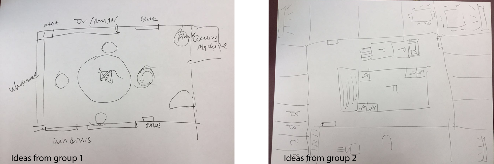

Rippl
Rippl is a robot designed to encourage balanced participation and efficiency in groups.
We designed Rippl after observing teams working together.
main function of the robot:
Demonstrate progress that each group member is making (contributions) using different ripples.
Key goal: create a soothing, productive environment without being intrusive and distracting.
Intro
-
BACKGROUND
Group productivity could be low sometimes due to distraction and inbalanced member participation. An approach to improve team productivity is needed.
-
OUR RESEARCH QUESTION
How can a robot encourage balanced participation and efficiency in groups?
-
KEY GOAL
Create a soothing, productive environment without being intrusive and distracting.
STEP1. OBSERVE
Teamwork TaskTo understand what might affect teamwork productivity, we first observed how teams working together. We invited two groups of participants to perform team tasks. Each group had 3 participants.
We gave them an open-ended challenge: Design a new student workplace that will be created on Cornell campus. Each group was given 15 minutes. After 15 minutes, they were asked to present and share their ideas with us.
Results:

Findings:
1. When some team members were dominating the conversation or slacking off, team productivity was low.
2. When team members got distracted by using cellphones, team productivity was low.
3. Team productivity was high when participation was balanced.
STEP2. THINK
Brainstorm robot ideas.
Research approaches to improve team productivity (inspiration).
We did individual research. I found that a kinetic sculpture at Changi Singapore Airport Terminal 1 could be a good reference to our design. The Kinetic Rain was the world's largest kinetic sculpture. 1,216 raindrops made of aluminium and highly polished copper, controlled by 1,216 individual motors, swirl and dance to depict the joy of travel.
The kinetic sculpture was inspiring to us because based on the passengers' feedback, the motion of the sculpture was not distractive yet beautiful. They felt delighted when seeing the motion of the sculpture. The goal of the sculpture design was to please passengers withouth being distractive. To users (passengers), the design was successful in achieving this goal.
Our design goal was also to create a soothing, productive environment without being intrusive and distracting. Therefore, the kinetic sculpture could be a good reference to our design.


{kind=link}
{kind=link}
{kind=link}
{kind=link}
STEP3. DESIGN
Based on our research and observation results, a balanced group participation would maximize team productivity. The design should not be intrusive. We decided to make a robot that would create ripples to demonstrate contribution each group member is making.
We designed different ripple motions based on team members' interactions to help group balance participation. When a group member is dominating the conversation, the robot would create ripple motion above that person's head to calm him down and to remind him to give other people a chance to speak. When a group member is not very engaged in a meeting, the robot would create raindrop motion above that person's head to encourage him to speak up in a meeting. When group participation is balanced, the robot would create a soothing wave motion to demonstrate balanced contribution.
Interaction flowchart

Prototype 1: Low-Fi
Made very quickly to get a feel of the flowing wave motion and the rippling motion.
Placed it above some members’ head to test.
From this, we had an idea for what our next prototype should be like.
Prototype 2: Mid-Fi
Used materials that were similar to the materials we used for the final design to get an idea of what materials to use for building the robot.
The Mid-Fi is in a smaller scale compared with the Hi-Fi.
Prototype 3: Hi-Fi
The scale of the Hi-Fi prototype is the same as the final design.
Introduced real user data into the test.
STEP4. USER TESTING
1. Video Prototyping
We acted out scenarios that we wanted to test and then video recorded how we could interact with the robot in certain scenarios. In this recording scenario, the robot created a soothing wave motion to demonstrate balanced contribution.
2. Surveys
We put our survey online and sent the qualtric link to our friends. We sent out surveys to question people after they viewed the video prototypes.
Study Design - Multiple Choice
Users were shown several videos of Rippl acting alone three videos of different motions and scenarios.
Multiple choice questions gauged how the audience felt about Rippl’s movements and interactions.
Study Design - Open Ended Questions
Open ended questions after the videos allowed participants to explain their interpretations of the motions and group dynamic.
3. Participants
26 participants. 8 males and 16 females.
Their ages range from 20 to 58.
Most of them are Cornell students except for one person
who is public administration.
They are from college of Engineering, College of Agriculture and Life Science, College of Art and Science, College of Art, Architecture and Planning, Vet School and Public Administration.
Their majors are Mechanical Engineering, biological engineering, Biology and Society, German, Architecture, Information Science, Landscape Architecture, ORIE, CS, political science, Vet school, Education and Public Administration.
Survey Results and Data Interpretation
4. Survey Results
5. Data Interpretation
Participants understood team dynamic situations. They thought the robot's motions were aesthetically pleasing, calming. Most Participants were neutral about the overall reactions of the robot’s impact on the team.
Lab Testing
We invited 3 participants to work on a group task (Desert Survival Challenge) while the robot responded to their group dynamic and conversation.
The 3 Participants (2 male, 1 female) were from different majors. Participants were not told what the robot would do.
Participants' Understanding of the Robot’s Motions
One participant did realize there were different movements that
corresponded to the conversation (agreements, disagreements, etc.)
One participant thought the motions were not very noticeable - out of line of sight. “I don’t look up when I’m working.”
One participant thought the motions were not very different from each other. Therefore, he didn't pay much attention to the robot.
STEP5. IMPROVE
Made motions more consistent and dramatic to imply an obvious purpose.
Transition from motion to stillness when participation was balanced since it was easy to ignore motions if the robot was moving all the time.
Explored new positioning of the robot relative to a user’s line of sight.
Tested with motors and LED lights.
Final Design
Rippl is featured on the Cornell InfoSci Twitter!
User's feedback
“Over time, I think people would find the robot critical in their team’s success”
“I felt comfortable with the robot”
“The robot motion was beneficial”
Final Design